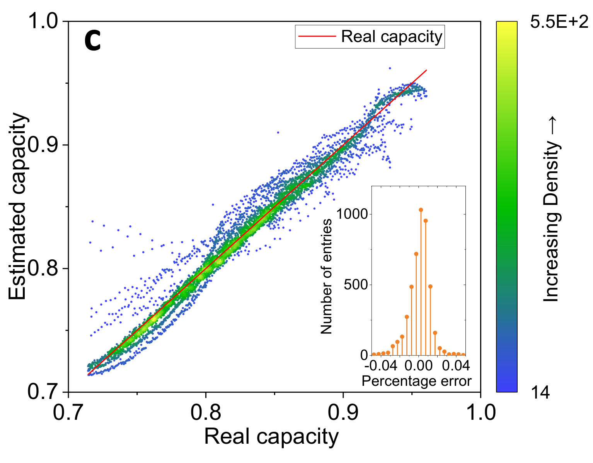
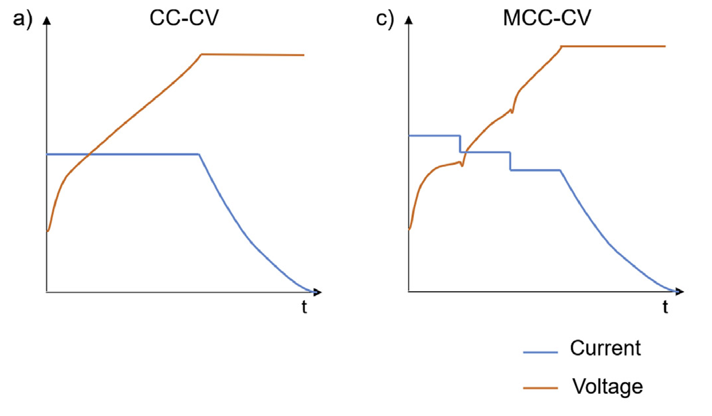
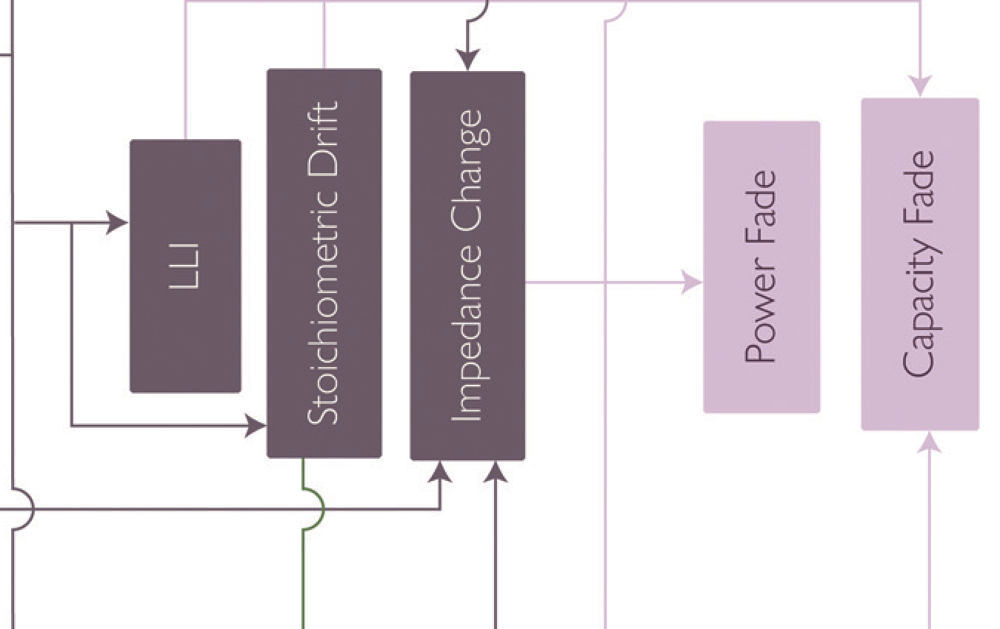
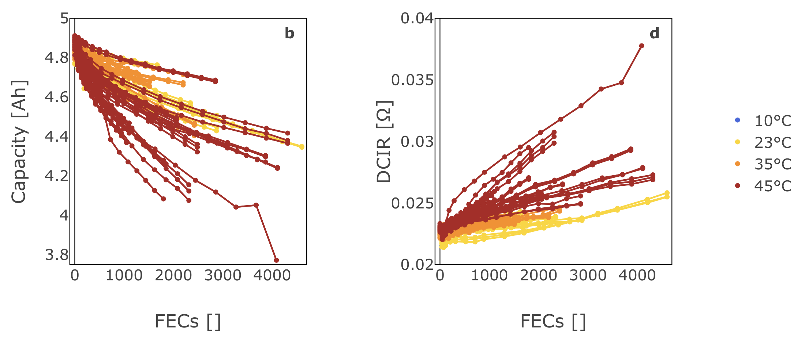

Battery research examples and a testable study plan
Choose a format from the contribution and available evidence.
Specify a battery comparison with a measurable outcome.
Explain which results would support, weaken or leave the claim unresolved.
Class route: paper examples, format workshop, proposal clinic, exit ticket.
| Format | Reader’s central question |
|---|---|
| Research article | What new finding does the evidence support? |
| Review | What does the body of literature establish? |
| Communication / Letter | What focused contribution does this journal accept? |
| Perspective | What interpretation or direction deserves attention? |
| Data paper | Can I understand, assess and reuse these data? |
| Research proposal | Can this planned study answer a useful question? |
Journal labels and requirements vary. A proposal is a planning document.

Both axes: capacity / nominal capacity.
Red diagonal: estimate equals measurement.
Ask whether the test cells represent the intended use.
Zhu et al. (2022), Fig. 4c. Panel extracted; original labels retained. CC BY 4.0 · Open figure

Blue: current. Orange: voltage. Horizontal axis: time.
CC-CV uses one current stage; MCC-CV uses several.
These schematics do not rank charging performance.
Tomaszewska et al. (2019), Fig. 8a,c. Schematic panels rearranged; original legend retained. CC BY 4.0 · Open figure
| Study | Cell chemistry | Temperature | Cycles | Retention |
|---|---|---|---|---|
| A | LFP / graphite | 25 °C | 200 | 92% |
| B | NMC / graphite | 35 °C | 100 | 95% |
| C | LFP / graphite | 25 °C | 500 | 88% |
Synthetic comparison only. Charging protocols, diagnostic conditions, n and uncertainty are missing.
Nie et al., Molecular Systems Design & Engineering, 2021. Communication.
Focused topic: transport in thick sintered battery electrodes.
Reading task: identify the intervention, comparator and essential control.
Short title shown here. Full citation and author manuscript are on the reading page.

LLI = loss of lithium inventory.
Impedance change can reduce power capability.
A capacity-loss curve alone cannot identify a unique mechanism.
Edge et al. (2021), Fig. 9 detail. Enlarged outcome region; upstream pathways omitted. CC BY 3.0 · Open figure

FEC = fully equivalent cycles. Each trajectory follows a cell.
Capacity falls and DCIR rises; compare protocols before attributing causes.
Stroebl et al. (2024), Fig. 8b,d. Stage 1 panels rearranged; shared legend retained. CC BY 4.0 · Open figure
Groups of 2–3. Use the four battery cases in Worksheet 3A.
For each: format, reason, missing requirement and alternative.
6 minutes to discuss. 2 minutes to prepare one explanation.
| Case | Likely format | One requirement to check |
|---|---|---|
| A: reusable cycling data | Data paper | Metadata, quality checks and access |
| B: conflicting aging studies | Review | Selection method and comparable conditions |
| C: untested charging idea | Research proposal | Outcome, control and decision rule |
| D: focused supported result | Communication / Article | Evidence and target-journal fit |
Alternative formats are acceptable when the contribution and evidence change explicitly.
Teaching question: does protocol B improve capacity retention over A?
Scope: one selected LFP / graphite cell model and a matched charging task.
Novelty remains a literature-search task before a real proposal.
Original classroom proposal. No improvement is assumed or reported.
Protocol B improves battery life.
B increases mean capacity retention at cycle 200 by more than 5 percentage points versus A.
Retention = 100 × Q₂₀₀ / Q₀, using the same diagnostic test.
Synthetic teaching hypothesis. Match cell model, SOC task and diagnostic conditions.
Unit: an independently assigned cell. Cycles are repeated measurements.
Randomize A and B, with relevant lot, channel or chamber blocks.
Match the charging task and diagnostic test. Record cell temperature.
Justify cell count, exclusions and analysis before the main study.
A retention difference alone does not establish a degradation mechanism.
| Estimated gain | Illustrative 95% CI | Decision about a gain >5 pp |
|---|---|---|
| 8 pp | 6 to 10 pp | Supports the specified improvement |
| 7 pp | 2 to 12 pp | Inconclusive about the 5 pp threshold |
| 1 pp | −2 to 4 pp | Does not support the target gain |
Synthetic examples. pp = percentage points. The 5 pp threshold is illustrative, not a universal standard.
| Proposal element | Worked battery example |
|---|---|
| Question and gap | Compare A and B for the selected cell. Verify novelty. |
| Hypothesis and outcome | Retention gain >5 pp at cycle 200. |
| Design and controls | Independent cells, planned allocation, matched tests. |
| Analysis and decision | Estimate B − A with a CI against the 5 pp threshold. |
| Feasibility and fallback | Pilot, cell-count plan, cycler booking and revised scope. |
Classroom template, with planning assumptions still to resolve before experimental work.
Illustration: 200 cycles × 2 h = 400 h, about 17 continuous days.
Add diagnostic tests, setup, downtime and channel constraints.
Fallback: revise the scope explicitly if the endpoint or precision is infeasible.
Planning arithmetic only. Actual cycle time and available resources must be measured or confirmed.
Draft the five fields in Worksheet 3B.
Name the outcome, comparator and independent unit.
Underline one unresolved assumption for your partner.
Partner A: 90-second pitch.
Partner B: 90-second pitch.
Final minute: one alternative explanation and one design change.
Cycle one cell per protocol and show that B is better.
Compare independent cells with a defined outcome, planned allocation and justified sample size.
Report the cycle-200 retention result. Stronger lifetime or mechanism claims need further evidence.
Revision exercise. No measured benefit or mechanism is asserted.
Article: contribution, intended reader and journal-specific format.
Proposal: outcome, comparison, independent unit and decision rule.
Next action: one missing piece of evidence or feasibility work.
Save or download your worksheet. Worksheet drafts are not submitted to the instructor.
3 minutes
One format-selection concept check.
Your project: format, audience and missing evidence.
One point still unclear, then anonymous feedback.
seminar3-cheme-feedback.soorathep-k.chatgpt.site/session/3
Exit ticket: optional student ID. Feedback: no name or student ID.
Research article: Zhu et al. (2022); further reading: Severson et al. (2019).
Review: Tomaszewska et al. (2019).
Communication: Nie et al. (2021).
Perspective: Edge et al. (2021).
Data Descriptor: Stroebl et al. (2024).
Full citations, publisher labels and reading prompts are available through the link.